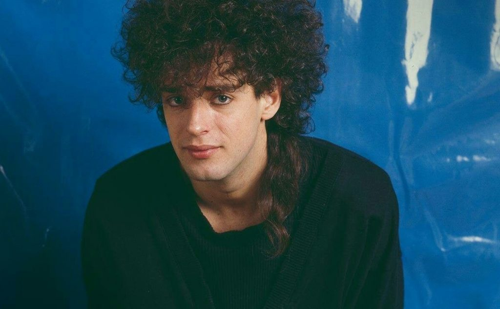

Galería
INTREGRANTES
SODA STEREO
| Nombre | Descripción | Año de Nacimiento |
|---|---|---|
| Charly Alberti | Músico de rock argentino, baterista. | 27 de marzo de 1963. |
| Zeta Bosio | Productor discográfico y DJ argentino. | 1 de octubre de 1958. |
| Gustavo Cerati | Fue un músico, cantautor, actor, y productor discográfico. | 11 de agosto de 1959. |
Descargas
{kind=link}
{kind=link}
{kind=link}
Formulario 2 - LLENA TUS DATOS
DONACIÓN
Galería
SODA STEREO
.jpg)
QUE GRANDE QUE SOS, VIEJO!!!
En 1995 la banda ganó en los Premios Konex el Diploma al Mérito por su destacada trayectoria en la música argentina durante la década y el Premio Konex de Platino a la mejor banda de rock argentino de la década. En 2002 recibieron el Premio Leyenda de MTV Latinoamérica por su trayectoria musical, el primero que entregó la entidad. En 2006 la revista estadounidense Al Borde publicó una lista con las 500 mejores canciones del rock iberoamericano, premiando sus canciones «De música ligera» (Número 1, siendo así considerada la mejor canción de toda la historia del rock latinoamericano), «Persiana americana», «En la ciudad de la furia», «Cuando pase el temblor», «Zoom», «Signos», «Ella usó mi cabeza como un revólver», «Trátame suavemente», «Primavera 0» y «Un misil en mi placard». En 2002 la revista Rolling Stone Argentina y el canal MTV publicaron una lista con las mejores 100 canciones del rock argentino, premiando sus canciones «De música ligera»...por cierto para mí fue un éxito te lo dice un fan, Bherny Lifoncio, «Persiana americana», «En la ciudad de la furia» y «Cuando pase el temblor» . En 2007 el sitio Rock.com.ar lanzó una lista con las mejores 100 canciones de la historia del rock argentino, premiando sus canciones «De música ligera», «Te hacen falta vitaminas» y «Nada personal». En 2011 el diario argentino La Nación lanzó una lista con los mejores videoclips del rock argentino, premiando el suyo de «En la ciudad de la furia» (siendo así considerado como el mejor videoclip de toda la historia del rock argentino). Los videos de «En la ciudad de la furia» y «Ella usó mi cabeza como un revólver» fueron finalista y ganador respectivamente del entonces único premio MTV a la música latina. El video de «Cuando pase el temblor» fue nominado finalista del 12.° World Festival of Video and TV en Acapulco. En 2006 la revista estadounidense Al Borde publicó una lista con los 250 mejores álbumes del rock iberoamericano, premiando sus álbumes Canción animal, Comfort y música para volar, Signos y Sueño Stereo. En 2012 la revista Rolling Stone EEUU lanzó una lista con los 10 mejores álbumes del rock latinoamericano, premiando su álbum Sueño Stereo .15 En 2007 la revista Rolling Stone Argentina publicó una lista con los 100 mejores álbumes del rock argentino, premiando sus álbumes Canción Animal y Signos. En 2007 también publicó otra lista con los 10 mejores álbumes en vivo del rock argentino, premiando su álbum Ruido Blanco. En 1997, la banda se disolvió por problemas personales y por diferencias de criterios artísticos entre sus integrantes, realizando una gira de despedida terminada el 20 de septiembre de 1997 en el estadio de River Plate, conocido como El último concierto. A mediados de 2007, la banda anunció su regreso para realizar una única gira continental llamada Me verás volver en la que reunió a más de un millón de seguidores, rompiendo varios récords de asistencia y número de conciertos. En 2020 la revista Billboard elaboró una lista con las 25 obras maestras del rock en español incluyendo la canción «Cuando pase el temblor». El 23 de junio de 2021 presentaron su primer video animado de la canción «¿Por qué no puedo ser del jet set?» en su canal oficial de YouTube. El mismo año, también estrenaron los videos animados de las canciones «Sobredosis de TV», «Imágenes retro» y «Danza rota».1920.